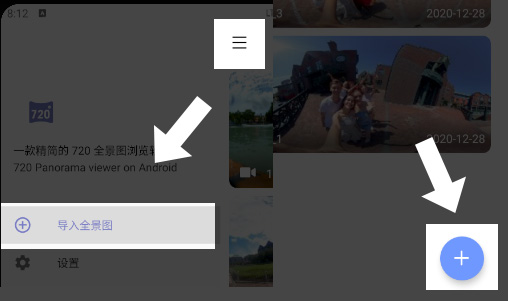
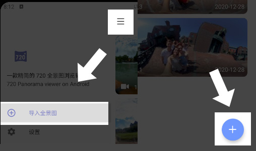

Click the "+" icon in the lower right corner of the home page or the "" icon in the upper left corner of the home page,
and then click "import panorama"
Select your panorama in the system album and click Finish
Click on the lower left corner of the system to switch the album
 ”图标，然后点击“导入全景图”

”图标，然后点击“导入全景图”
